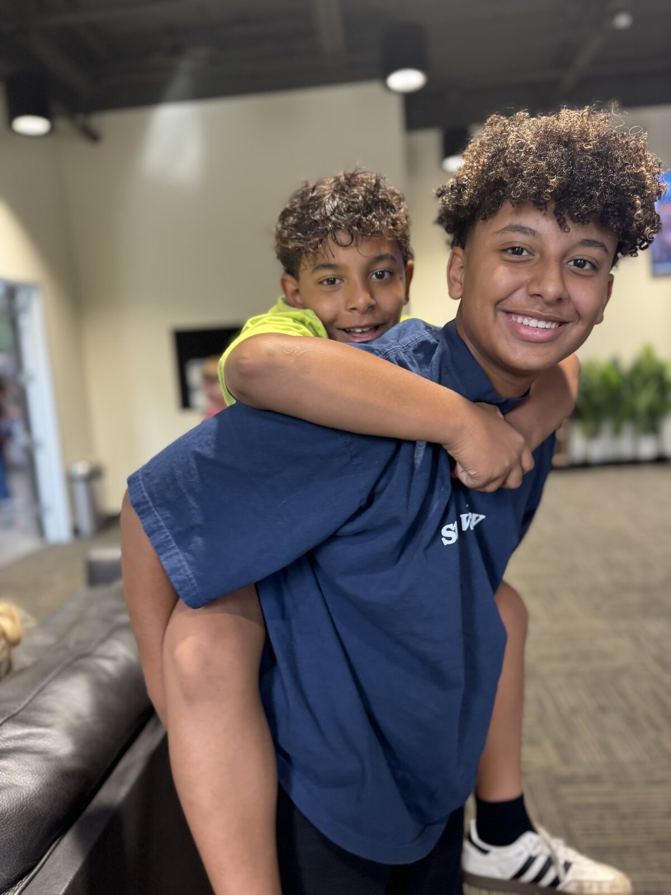
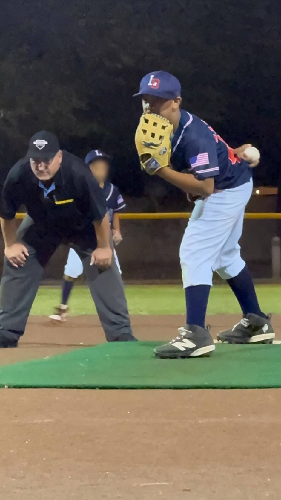
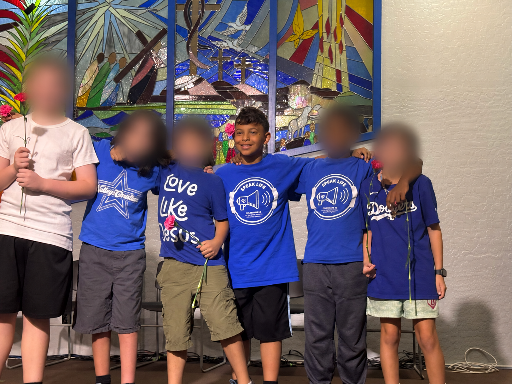

School Choice Arizona
An STO option for recommending Indigo Randolph at Valley Christian Schools.
Give with School Choice Arizona (opens in a new tab)A community to grow with
Recommend Indigo Randolph.
Since first grade, Valley Christian Schools has been a place where Indigo has grown in faith, friendship, and confidence. Your support through Arizona's Private School Tuition Tax Credit can help him continue his journey in the community he loves.
One school: Valley Christian Schools. Three ways to give.
The organizations below are charitable school tuition organizations (STOs), not different schools. Choose any one to make your donation and recommend Indigo Randolph for a tuition scholarship at Valley Christian Schools.
Learn how STO giving works
Turn tax dollars into opportunity
Indigo attends Valley Christian Schools. School Choice Arizona, Arizona Tuition Connection, and ACSTO are separate charitable organizations that accept donations and award tuition scholarships. They are three options for supporting his education at the same school.
I have submitted Indigo’s scholarship application to all three organizations, so each has his information on hand for scholarship consideration. You can choose whichever STO works best for you; you do not need to donate to all three.
What does an STO do? A school tuition organization collects charitable donations, reviews scholarship applications, and awards scholarships for private-school tuition. You donate to the STO, rather than paying Indigo’s school directly.
How does the tax credit help? An eligible gift can reduce your Arizona income tax dollar for dollar, up to the applicable limits and your tax liability. For example, a qualifying $100 donation could reduce that tax by $100. A credit reduces tax; a deduction reduces taxable income. Check your tax-year limits and keep your donation receipt.
When donating, recommend
Indigo Randolph
His school: Valley Christian Schools
1. Choose one of the STOs below and donate through that organization.
2. Enter Indigo Randolph in its student recommendation field. If asked for his school, select Valley Christian Schools.
3. The STO considers his application and your recommendation. If it awards him a scholarship, it sends the scholarship funds to the school toward his tuition.
A credit reduces eligible Arizona income tax dollar for dollar. It is not a savings account or a replacement for required tax payments. These credits are nonrefundable; unused eligible credit may be carried forward under the program’s rules.
Check the limits for your tax year and filing status before donating. Original and Switcher STO credits have separate requirements; giving through several STOs does not increase your total limit. Keep your receipts and follow the organization’s tax-year and filing instructions.
You may also qualify for separate credits for eligible public-school gifts and donations to certified charitable or foster care organizations, subject to each category’s rules and your tax liability.
This is general information. Consult a tax professional about your situation.
Your recommendation matters, but it does not guarantee an award: STOs retain control of scholarship decisions. Gifts benefiting your own dependent, or reciprocal donation arrangements benefiting one another’s dependents, do not qualify for the STO credit.
Each option below supports the same goal: scholarship consideration for Indigo Randolph at Valley Christian Schools. Follow your chosen organization’s instructions and recommend Indigo by his full name.
An STO option for recommending Indigo Randolph at Valley Christian Schools.
Give with School Choice Arizona (opens in a new tab)Another STO option for the same student and school: Indigo Randolph at Valley Christian Schools.
Give with Arizona Tuition Connection (opens in a new tab)A third STO option for recommending Indigo Randolph at Valley Christian Schools.
Give with ACSTO (opens in a new tab)Thank you for being part of Indigo’s community.
Meet Indigo
We chose Christian education for Indigo because we wanted him to build a foundation rooted in Christ, one he could rely on even when other areas of life felt uncertain. When he transitioned from his Christian daycare to Valley Christian, he was able to stay connected with many of his childhood friends.
Five years later, those friendships and that faith-centered community remain important parts of his life.
Indigo also loves athletics! This season, we've been blessed to find Legends Baseball, where he has grown tremendously as a player. He continues to be a power hitter and has made wonderful progress as a pitcher. Comfortable nearly anywhere on the field, he primarily plays pitcher and third base, while also serving as a backup shortstop.
He also loves playing soccer with his friends and has shown a natural aptitude for goalkeeper and defender.
Our hope is that Indigo will continue at Valley through junior high and high school, with the opportunity to represent his school in the athletic programs he already dreams of joining.
Your support helps us continue investing in the faith, friendships, and opportunities that are shaping who Indigo is becoming.
Thank you for being part of his journey.


Meet his big brother
Micah attends Valley High School and is involved in choir, wrestling, and volleyball. We’ll share opportunities to support his activities here as those fundraisers come up.